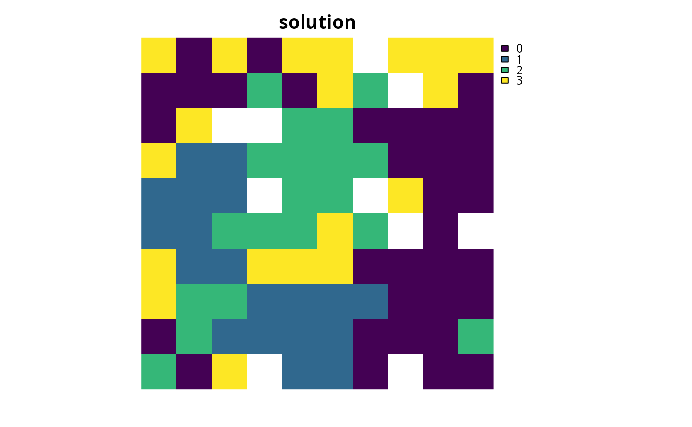

Add a binary decision to a conservation planning problem.
This is the classic decision of either prioritizing or not prioritizing a
planning unit. Typically, this decision has the assumed action of buying
the planning unit to include in a protected area network. If no decision is
added to a problem then this decision class will be used by default.
add_binary_decisions(x)
Arguments
| x |
|
|---|
Value
ConservationProblem-class object with the decisions
added to it.
Details
Conservation planning problems involve making decisions on planning
units. These decisions are then associated with actions (e.g. turning a
planning unit into a protected area). If no decision is explicitly added to
a problem, then the binary decision class will be used by default. Only a
single decision should be added to a ConservationProblem object.
If multiple decisions are added to a problem object, then the last
one to be added will be used.
See also
Examples
# set seed for reproducibility set.seed(500) # load data data(sim_pu_raster, sim_features, sim_pu_zones_stack, sim_features_zones) # create minimal problem with binary decisions p1 <- problem(sim_pu_raster, sim_features) %>% add_min_set_objective() %>% add_relative_targets(0.1) %>% add_binary_decisions()#> Optimize a model with 5 rows, 90 columns and 450 nonzeros #> Variable types: 0 continuous, 90 integer (90 binary) #> Coefficient statistics: #> Matrix range [2e-01, 9e-01] #> Objective range [2e+02, 2e+02] #> Bounds range [1e+00, 1e+00] #> RHS range [3e+00, 8e+00] #> Found heuristic solution: objective 2337.9617505 #> Presolve time: 0.00s #> Presolved: 5 rows, 90 columns, 450 nonzeros #> Variable types: 0 continuous, 90 integer (90 binary) #> Presolved: 5 rows, 90 columns, 450 nonzeros #> #> #> Root relaxation: objective 1.931582e+03, 12 iterations, 0.00 seconds #> #> Nodes | Current Node | Objective Bounds | Work #> Expl Unexpl | Obj Depth IntInf | Incumbent BestBd Gap | It/Node Time #> #> 0 0 1931.58191 0 4 2337.96175 1931.58191 17.4% - 0s #> H 0 0 1985.6818841 1931.58191 2.72% - 0s #> #> Explored 1 nodes (12 simplex iterations) in 0.00 seconds #> Thread count was 1 (of 4 available processors) #> #> Solution count 2: 1985.68 2337.96 #> #> Optimal solution found (tolerance 1.00e-01) #> Best objective 1.985681884076e+03, best bound 1.931581908865e+03, gap 2.7245%# build multi-zone conservation problem with binary decisions p2 <- problem(sim_pu_zones_stack, sim_features_zones) %>% add_min_set_objective() %>% add_relative_targets(matrix(runif(15, 0.1, 0.2), nrow = 5, ncol = 3)) %>% add_binary_decisions()#> Optimize a model with 105 rows, 270 columns and 1620 nonzeros #> Variable types: 0 continuous, 270 integer (270 binary) #> Coefficient statistics: #> Matrix range [2e-01, 1e+00] #> Objective range [2e+02, 2e+02] #> Bounds range [1e+00, 1e+00] #> RHS range [1e+00, 2e+01] #> Found heuristic solution: objective 12614.662551 #> Presolve removed 3 rows and 0 columns #> Presolve time: 0.00s #> Presolved: 102 rows, 270 columns, 1350 nonzeros #> Variable types: 0 continuous, 270 integer (270 binary) #> Presolved: 102 rows, 270 columns, 1350 nonzeros #> #> #> Root relaxation: objective 1.096484e+04, 94 iterations, 0.00 seconds #> #> Nodes | Current Node | Objective Bounds | Work #> Expl Unexpl | Obj Depth IntInf | Incumbent BestBd Gap | It/Node Time #> #> 0 0 10964.8406 0 14 12614.6626 10964.8406 13.1% - 0s #> H 0 0 11209.793128 10964.8406 2.19% - 0s #> #> Explored 1 nodes (94 simplex iterations) in 0.01 seconds #> Thread count was 1 (of 4 available processors) #> #> Solution count 2: 11209.8 12614.7 #> #> Optimal solution found (tolerance 1.00e-01) #> Best objective 1.120979312806e+04, best bound 1.096484061295e+04, gap 2.1852%#> class : RasterStack #> dimensions : 10, 10, 100, 3 (nrow, ncol, ncell, nlayers) #> resolution : 0.1, 0.1 (x, y) #> extent : 0, 1, 0, 1 (xmin, xmax, ymin, ymax) #> crs : NA #> names : layer.1.1, layer.1.2, layer.1.3 #> min values : 0, 0, 0 #> max values : 1, 1, 1 #>